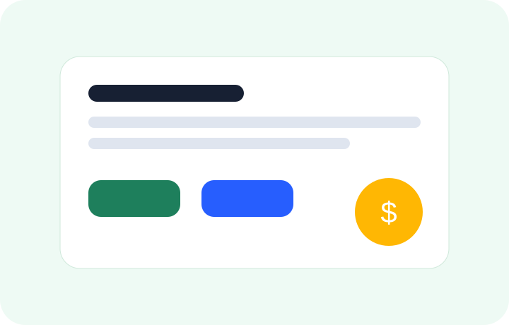

Aprende a convertir tus habilidades en servicios pagados desde casa, incluso si estás empezando.

Atención al cliente, chat, data entry, transcripción, asistencia virtual y tareas administrativas.
Fácil inicioDiseño en Canva, edición de videos cortos, manejo de redes, redacción y traducción.
Demanda altaCrear contenido, investigar, resumir, automatizar tareas y apoyar a negocios con herramientas digitales.
TendenciaTrabajar desde casa requiere elegir una habilidad, practicarla y ofrecerla de forma clara. No necesitas empezar perfecto: necesitas una oferta simple, ejemplos de tu trabajo y constancia para contactar clientes.